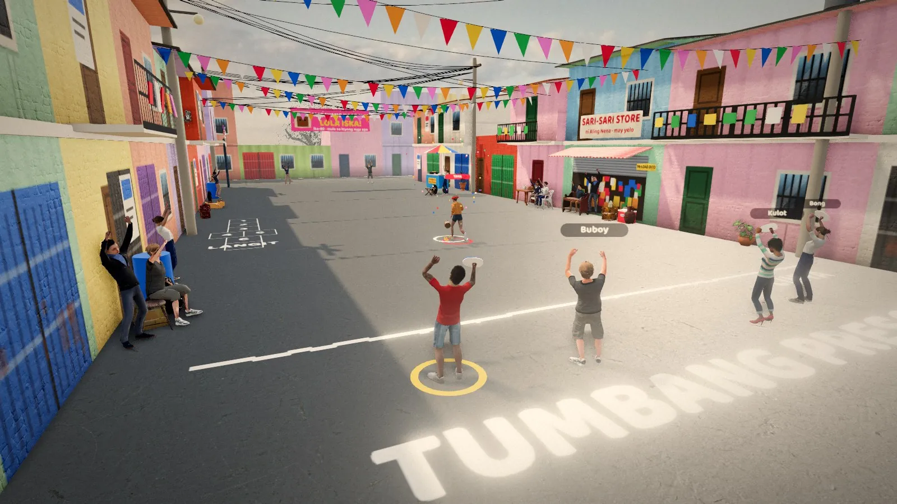

Tumbang Preso
The Filipino street game, in 3D

ArcadeKeyboard · Controller · TouchFree, in the browser
Play Tumbang PresoAbout the game
It is a sunny afternoon in an eskinita, one of those narrow streets between rows of houses. There is a sari-sari store (neighborhood corner shop) with plastic chairs out front, laundry on the balconies, banderitas (paper bunting) strung overhead, and a jeepney passing at the end of the road. You and four friends, Buboy, Nene, Kulot and Bong, have a sardine can and your tsinelas (flip-flops), and you play until Nanay calls everyone in to eat at six.
The game is seen through your own eyes by default, with your slipper in your hand, though you can switch to a camera behind you. The neighbors watch from their gates, the kids shout comments when someone misses, and the light slowly turns golden as the afternoon runs out.
How to play
One player is the taya, the one who is "it", and guards the lata (can) standing in its circle. Everyone else stands behind the chalk line, where they are safe. Hold to aim at the can, watch the swinging power meter, and let go to throw your tsinelas where you are looking.
Knock the can down and the taya has to fetch it and set it back up before tagging anyone. That is the moment for everyone to run out, grab their slippers and get back behind the line. Out in the street you can be tagged, unless you are standing on your own tsinelas. If you get tagged, you become the taya: guard the can, then chase whoever steps out. Tag someone and you are back to throwing.
Points come from knocking the can, saving friends who were stuck out in the field, knocking it several times in a row, long shots from ten meters or more, getting home safely, and tagging as the taya.
- Mouse and keyboard: click the game so the mouse looks around. Click or Space: hold to aim, release to throw, or dive as the taya. WASD to move, Shift to run faster, Q and E or the arrows to turn, V to switch camera, P to pause, M for sound.
- Controller: any gamepad, PlayStation included. Left stick moves, right stick looks, Cross throws or dives, Circle or R2 for speed, Triangle changes camera, Options pauses.
- Phone and tablet: your left thumb makes a joystick wherever it lands, drag on the right to look, and use the IBATO (throw) and TAKBO (run) buttons.
You can play Klasiko until six o'clock, Walang Katapusan (endless) with no deadline, or Ikaw ang Taya, where you start as the guard. Madali (easy) shows the whole throwing arc and a slow taya, Katamtaman (medium) shows half, and Mahirap (hard) shows none and gives you a quick taya.
Tips
- Do not run out just because your slipper is far away. Wait until the can goes down, or until the taya is busy chasing someone else.
- Your own tsinelas is a safe spot. If the taya comes close while you are out, step onto it and wait.
- Friends stranded in the street are counting on you. Knocking the can while they are out saves them and earns extra points.
- Long throws from ten meters or more score a bonus, but a miss leaves your slipper deep in the field. Take them when the street is quiet.
- As the taya, stay near the can and let the runners come to you, then dive when one is within reach.
Tumbang preso, the street game
Tumbang preso is one of the classic larong kalye (street games) that Filipino kids have played for generations, alongside patintero and agawan base. The name means roughly "knock down the prisoner": the empty can is the preso, and the aim is to topple it. All you need is a can, a chalk or stick-drawn line, a circle for the can, and the slippers already on everyone's feet. That is a big part of why it spread everywhere. Nobody had to buy anything.
Before playing, kids often decide who is taya with a counting-out chant, and "maiba taya" is a common one; the game uses it for its opening roulette. House rules vary from street to street. In many, a player standing on their own slipper cannot be tagged, and this game follows that rule.
It is still played wherever there is a quiet road and an empty can. If you try the real thing, pick a safe spot well away from cars.